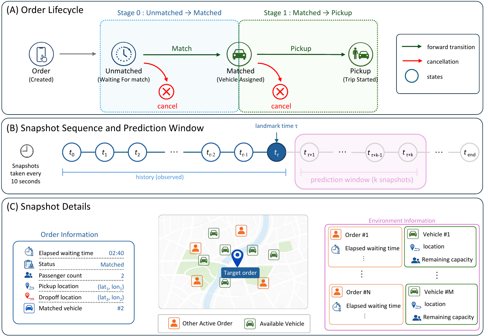
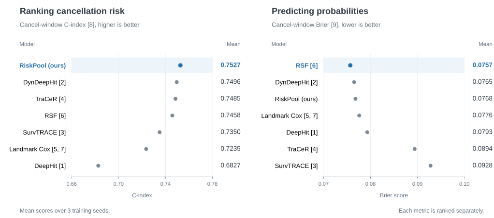
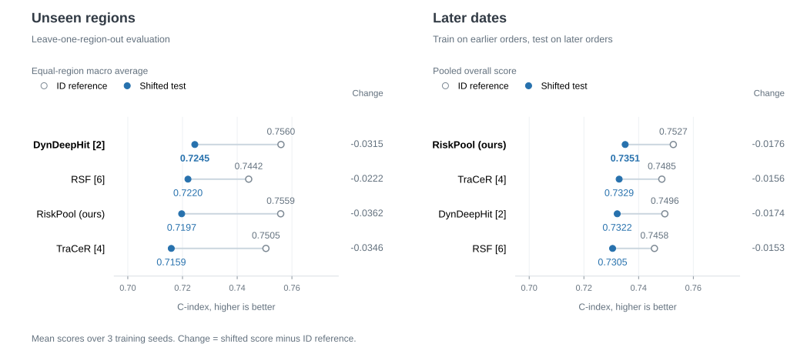

SurvCancel: A Longitudinal Dataset and Benchmark for Dynamic Order Cancellation Prediction in On-Demand Ride-Sharing Systems
NeurIPS 2026Evaluations & Datasets Track
1 School of Vehicle and Mobility, Tsinghua University
2 State Key Laboratory of Intelligent Green Vehicle and Mobility, Tsinghua University
3 Department of Computer Science, University of Copenhagen
Abstract
Passenger-order cancellation is a critical source of uncertainty in on-demand ride-sharing systems, where requests, assignments, and vehicle routes evolve continuously in real time. Due to shared capacity and coupled routes, a single cancellation may propagate through downstream matching and routing decisions, degrading system efficiency and service reliability. However, cancellation prediction in on-demand ride-sharing remains difficult to study systematically due to the lack of large-scale longitudinal datasets, standardized evaluation protocols, and fine-grained real-time benchmarks.
In this work, we introduce SurvCancel, a real-world longitudinal dataset and benchmark for dynamic passenger-order cancellation prediction in on-demand ride-sharing systems. Constructed from operational logs collected across four service regions, SurvCancel contains 173K released orders and 7.9M time-dependent snapshots, capturing both order-level attributes and the evolving supply-demand environment throughout each order's lifecycle. We formulate cancellation prediction as a stage-conditioned dynamic survival task: at each landmark time, models estimate short-term cancellation risk from the historical state sequence observed so far. Evaluating representative classical and neural survival models under both in-distribution and distribution-shift protocols reveals stage-dependent model behavior and distinct robustness patterns across regions and time periods.
Dataset Overview

The SurvCancel Dataset
Each order is tracked longitudinally along its pre-pickup trajectory—from creation through vehicle matching to pickup or cancellation—jointly with nearby active requests and available fleet capacity. Alongside the raw variable-length snapshots, we release Clean58, a standardized 58-dimensional representation that provides a unified input interface across model families.
Our benchmark suite evaluates models under in-distribution, leave-one-region-out (LORO), and chronological splits using order-level partitioning and shared test landmarks.
Experiments
We benchmark six representative survival models alongside RiskPool, our lightweight history-pooling architecture. All methods are evaluated on the shared Clean58 representation and fixed test landmarks across three random seeds.
Evaluated baselines span static competing-risk survival modeling (DeepHit [1]), recurrent dynamic survival modeling (DynDeepHit [2]), Transformer-based survival models (SurvTRACE [3] and TraCeR [4]), Landmark Cox regression [5][7], and Random Survival Forests (RSF) [6].
Main Benchmark
We evaluate both risk discrimination via the cancel-window C-index [8] and probabilistic accuracy via the cancel-window Brier score [9].

View stage-wise benchmark scores
| Model | Overall C-index ↑ | Stage 0 C-index ↑ | Stage 1 C-index ↑ | Brier ↓ |
|---|---|---|---|---|
| RiskPool (ours) | 0.7527 | 0.7650 | 0.7061 | 0.0768 |
| DynDeepHit [2] | 0.7496 | 0.7618 | 0.7090 | 0.0765 |
| TraCeR [4] | 0.7485 | 0.7616 | 0.7000 | 0.0894 |
| RSF [6] | 0.7458 | 0.7561 | 0.7002 | 0.0757 |
| SurvTRACE [3] | 0.7350 | 0.7608 | 0.6327 | 0.0928 |
| Landmark Cox [5][7] | 0.7235 | 0.7342 | 0.6741 | 0.0776 |
| DeepHit [1] | 0.6827 | 0.7127 | 0.5866 | 0.0793 |
Generalization Across Regions and Time
We evaluate the four top-performing models under spatial transfer (leave-one-region-out across R1–R4) and temporal shift (training on earlier dates and testing on future orders), comparing each shifted C-index against its corresponding in-distribution (ID) reference.

References
- [1]Changhee Lee, William R. Zame, Jinsung Yoon, and Mihaela van der Schaar. DeepHit: A Deep Learning Approach to Survival Analysis With Competing Risks. AAAI, 2018.
- [2]Changhee Lee, Jinsung Yoon, and Mihaela van der Schaar. Dynamic-DeepHit: A Deep Learning Approach for Dynamic Survival Analysis With Competing Risks Based on Longitudinal Data. IEEE Transactions on Biomedical Engineering, 67(1):122–133, 2020.
- [3]Zifeng Wang and Jimeng Sun. SurvTRACE: Transformers for Survival Analysis With Competing Events. ACM BCB, 2022.
- [4]Maxmillan Ries and Sohan Seth. TraCeR: Transformer-Based Competing Risk Analysis with Longitudinal Covariates. arXiv:2512.18129, 2025.
- [5]D. R. Cox. Regression Models and Life-Tables. Journal of the Royal Statistical Society, Series B, 34(2):187–220, 1972.
- [6]Hemant Ishwaran, Udaya B. Kogalur, Eugene H. Blackstone, and Michael S. Lauer. Random Survival Forests. The Annals of Applied Statistics, 2(3):841–860, 2008.
- [7]Hans C. van Houwelingen. Dynamic Prediction by Landmarking in Event History Analysis. Scandinavian Journal of Statistics, 34(1):70–85, 2007.
- [8]Frank E. Harrell Jr., Kerry L. Lee, Robert M. Califf, David B. Pryor, and Robert A. Rosati. Regression Modelling Strategies for Improved Prognostic Prediction. Statistics in Medicine, 3(2):143–152, 1984.
- [9]Glenn W. Brier. Verification of Forecasts Expressed in Terms of Probability. Monthly Weather Review, 78(1):1–3, 1950.
BibTeX
@inproceedings{liu2026survcancel,
title = {SurvCancel: A Longitudinal Dataset and Benchmark for Dynamic Order Cancellation Prediction in On-Demand Ride-Sharing Systems},
author = {Liu, Huayang and Zheng, Mingyu and Zhang, Wei and Bian, Yijun and Wang, Kai},
booktitle = {Advances in Neural Information Processing Systems (NeurIPS), Evaluations and Datasets Track},
year = {2026}
}